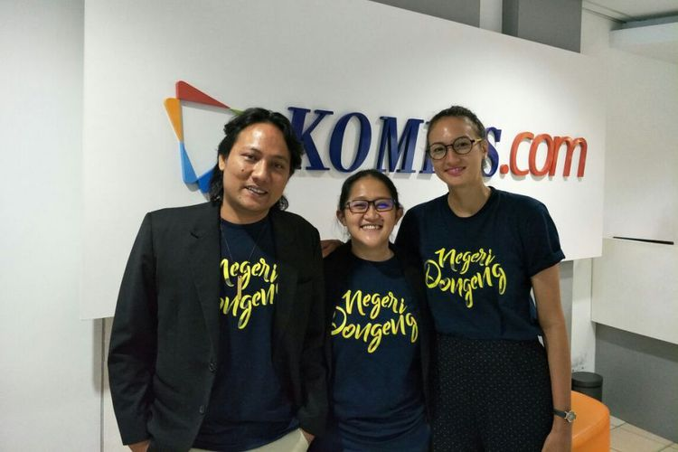
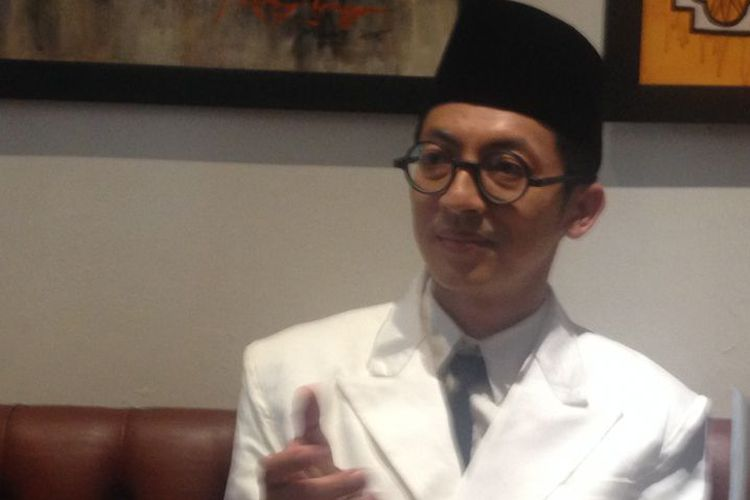
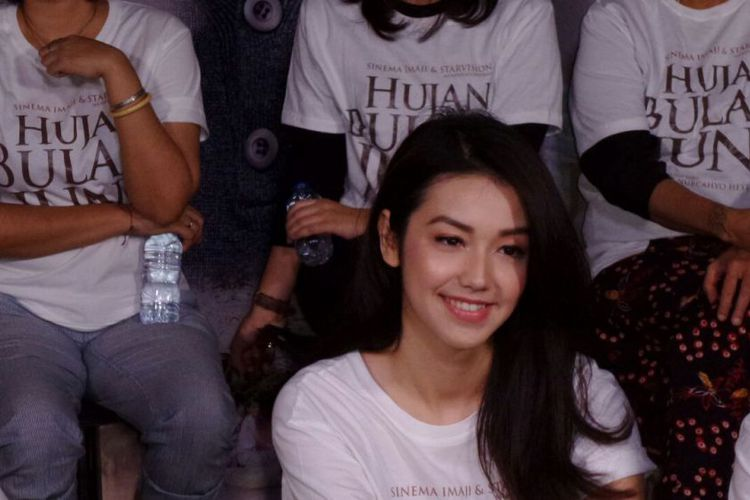
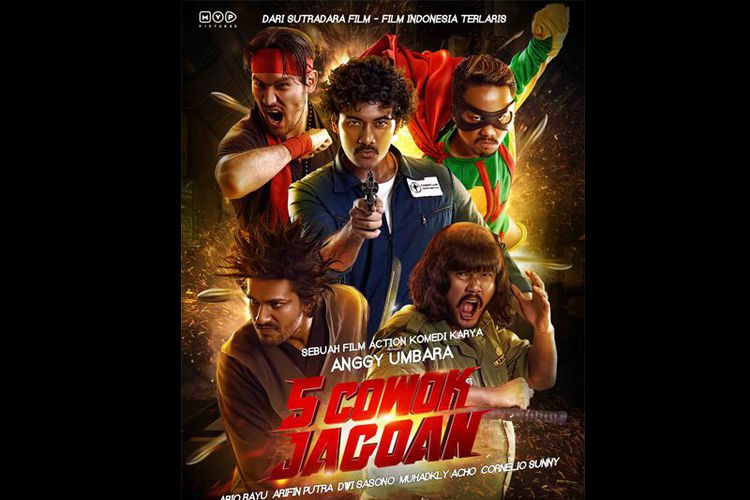

| MBC News | |||||||||||||||||||||||||||||||||||||||||||||||||||||||||||||||||||||||||||||||||||||||||||||||||||
| NATIONAL | REGIONAL | POLITICS | ECONOMY | ENTERTAINMENT | TECHNOLOGY | SPORT | TRAVEL | HEALTH | |||||||||||||||||||||||||||||||||||||||||||||||||||||||||||||||||||||||||||||||||||||||||||
Produser Film Negeri Dongeng Optimistis Sabet Piala Citra di FFI 2017Produser Chandra Sembiring merasa optimistis film dokumenter Negeri Dongeng akan menyabet Piala Citra atau FFI 2017 untuk kategori Dokumenter Panjang Terbaik. "Dari pihak kami sih yakin," kata Chandra saat berbincang di kantor redaksi Kompas.com, Palmerah Selatan, Jakarta Pusat, Rabu (25/10/2017). |
Nantikan Wage pada Hari Sumpah Pemuda 2017Biopic (biographical picture) tentang pencipta lagu kebangsaan "Indonesia Raya", Wage Rudolf (WR) Supratman, yang berjudul Wage, akan segera diputar di gedung-gedung bioskop. Film tersebut direncanakan akan diluncurkan tepat pada Hari Sumpah Pemuda 28 Oktober 2017. "Tanggal 28 (Oktober) ini peluncuran perdana di Hari Sumpah Pemuda, peluncuran di Djakarta Theater," ujar Andi Shavik, produser film Wage, ketika dihubungi pada Rabu (25/10/2018). |
||||||||||||||||||||||||||||||||||||||||||||||||||||||||||||||||||||||||||||||||||||||||||||||||||
Velove Vexia Menggali Perasaan demi Hujan Bulan JuniArtis peran Velove Vexia mengaku harus menggali perasaannya agar karakternya sebagai Pingkan dalam film Hujan Bulan Juni mengalir. Film itu terinspirasi dari puisi berjudul sama karya Sapardi Djoko Damono yang begitu puitis. "Saya gali lagi perasaan di setiap scene dan akhirnya mengalir. Enggak cuma baca aja, harus mengalir," ujar Velove ketika menghadiri screening film Hujan Bulan Juni di XXI Epicentrum, Kuningan, Jakarta Selatan, Selasa (25/10/2017). |
|||||||||||||||||||||||||||||||||||||||||||||||||||||||||||||||||||||||||||||||||||||||||||||||||||
Bocoran Film "5 Cowok Jagoan" Bakal Muncul di Indonesia Comic Con 2017Film 5 Cowok Jagoan produksi MVP Pictures yang rencananya tayang pada 14 Desember 2017, bocorannya bakal muncul di ajang Indonesia Comic Con 2017 yang berlangsung di Jakarta Convention Center pada 28-29 Oktober 2017. Berdasarkan siaran pers yang dikirim MVP Pictures pada Selasa (24/10/2017), diketahui bahwa bocoran ini berupa trailer resmi dan poster. "Kami sengaja meluncurkan official trailer dan poster pada momen ini karena sesuai dengan konsep dari Indonesia Comic Con 2017, yaitu budaya pop (kultur pop) dan komedi," ujar produser film 5 Cowok Jagoan, Raam Punjabi. |
|||||||||||||||||||||||||||||||||||||||||||||||||||||||||||||||||||||||||||||||||||||||||||||||||||
| MBC News © 2017 | |||||||||||||||||||||||||||||||||||||||||||||||||||||||||||||||||||||||||||||||||||||||||||||||||||
| Minggu | Senin | Selasa | Rabu | Kamis | Jumat | Sabtu |
|---|---|---|---|---|---|---|
| 1 | 2 | 3 | ||||
| 4 | 5 | 6 | 7 | 8 | 9 | 10 |
| 11 | 12 | 13 | 14 | 15 | 16 | 17 |
| 18 | 19 | 20 | 21 | 22 | 23 | 24 |
| 25 | 26 | 27 | 28 | 29 | 30 | 31 |